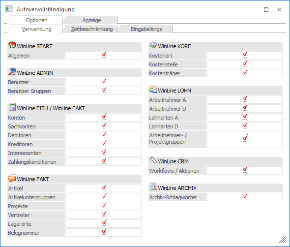
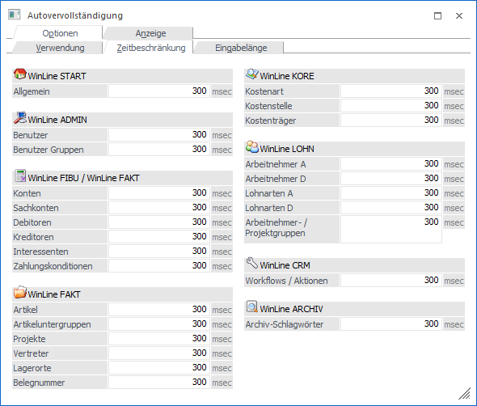
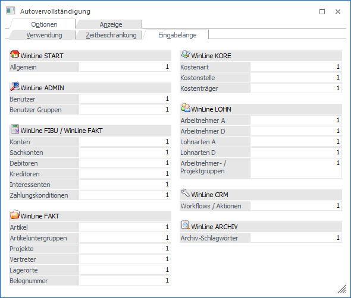

In den Unterregistern des Register "Optionen" kann definiert werden, ob es eine Autovervollständigung geben soll und ab wann dieses ausgeführt wird.
Hinweis
Die Speicherung sämtlicher Optionen erfolgt arbeitsplatzbezogen.
Unterregister Verwendung

In dem Unterregister "Verwendung" kann pro Autovervollständigungsobjekt hinterlegt werden, ob eine Autovervollständigung gewünscht ist. Mit Hilfe des Eintrags "Allgemein" unter "WinLine START" kann die gesamte Autovervollständigung deaktiviert werden.
Hinweis
Der Bereich "WinLine FIBU / WinLine FAKT" ist u.a. in die Teilbereiche "Konten", "Debitoren" und "Kreditoren" aufgeteilt. Wird im Feld "Konten" die Checkbox entfernt, so deaktiviert man die Autovervollständigung im Personenkontenstamm. Entfernt man wiederum in den Feldern "Debitoren" oder "Kreditoren" die Checkbox, so wird die Autovervollständigung bei der Erfassung von Bewegungsdaten deaktiviert (wie z.B. Belege erfassen, Dialog Stapel, etc.).
Unterregister "Zeitbeschränkung"

In dem Unterregister "Zeitbeschränkung" kann für alle Objekte die Zeit in Millisekunden eingegeben werden, ab welcher die Autovervollständigung ausgelöst werden soll. Trägt man für ein Feld den Wert "0" ein, so wird die Autovervollständigung für das betroffene Objekt deaktiviert.
Hinweis
Der Bereich "WinLine FIBU / WinLine FAKT" ist u.a. in die Teilbereiche "Konten", "Debitoren" und "Kreditoren" aufgeteilt. Wird im Feld "Konten" der Wert "0" eingetragen, so deaktiviert man die Autovervollständigung im Personenkontenstamm. Trägt man wiederum im Feld "Debitoren" oder "Kreditoren" den Wert "0" ein, so wird die Autovervollständigung bei der Erfassung von Bewegungsdaten deaktiviert (wie z.B. Belege erfassen, Dialog Stapel, etc.).
Unterregister "Eingabelänge"

In dem Unterregister "Eingabelänge" kann für alle Objekte die Anzahl der Zeichen hinterlegt werden, ab welcher die Autovervollständigung ausgelöst werden soll. Trägt man für ein Feld den Wert "0" ein, so wird die Autovervollständigung für das betroffene Objekt deaktiviert.
Hinweis
Der Bereich "WinLine FIBU / WinLine FAKT" ist u.a. in die Teilbereiche "Konten", "Debitoren" und "Kreditoren" aufgeteilt. Wird im Feld "Konten" der Wert "0" eingetragen, so deaktiviert man die Autovervollständigung im Personenkontenstamm. Trägt man wiederum im Feld "Debitoren" oder "Kreditoren" den Wert "0" ein, so wird die Autovervollständigung bei der Erfassung von Bewegungsdaten deaktiviert (wie z.B. Belege erfassen, Dialog Stapel, etc.).